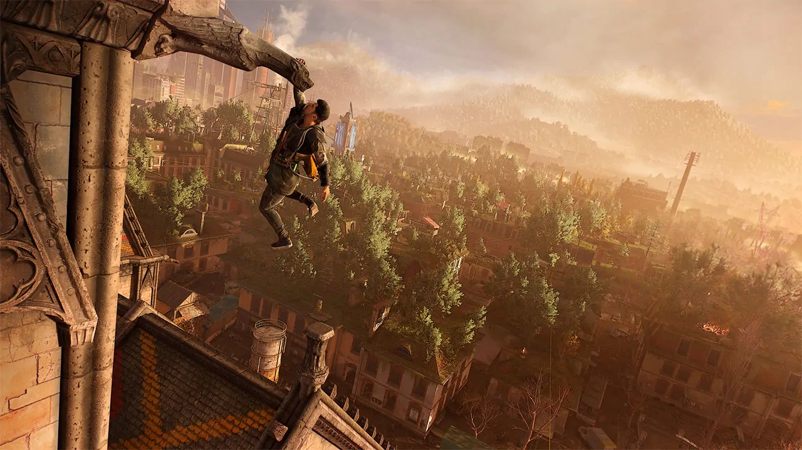
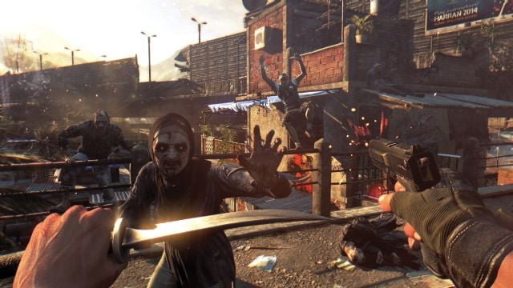
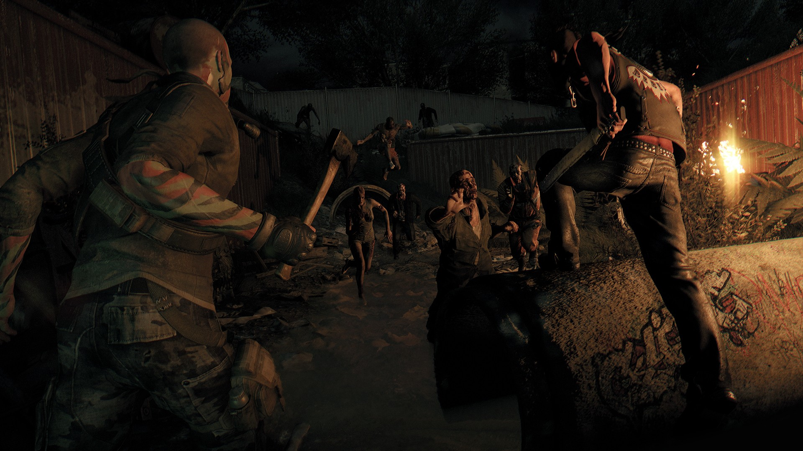
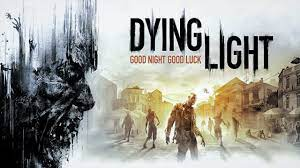

Dying Light, Techland tarafından geliştirilen ve 2015 yılında piyasaya sürülen bir açık dünya hayatta kalma-korku oyunudur. Oyun, zombi kıyameti sonrası bir dünyada geçiyor ve oyunculara parkur mekanikleriyle zenginleştirilmiş bir deneyim sunuyor.
Oyuncular, Harran adlı kurgusal bir şehirde, GRE (Global Relief Effort) ajanı Kyle Crane'in rolünü üstleniyor. Görevi, şehri saran zombi salgınının kaynağını araştırmak ve hayatta kalanlara yardım etmek. Hikâye, derinlikten yoksun ve klişe olarak nitelendirilse de, oyun atmosferi ve çevre tasarımı bu eksikliği bir nebze telafi ediyor.
Dying Light'ın en dikkat çeken özelliği, parkur mekanikleriyle zenginleştirilmiş oynanışı. Oyuncular, binaların çatılarında koşabilir, engelleri aşabilir ve zombilerden kaçabilirler. Bu dinamik hareket sistemi, oyuna akıcı bir deneyim katıyor. Ayrıca, gece-gündüz döngüsü, oynanışı doğrudan etkiliyor; geceleri zombiler daha agresif ve tehlikeli hale geliyor, bu da oyuncuları stratejik düşünmeye itiyor.
Oyun, görsel açıdan etkileyici bir deneyim sunuyor. Detaylı çevre tasarımları ve atmosferik ışıklandırma, oyuncuyu Harran'ın tehlikeli sokaklarına çekiyor. Ses tasarımı da bu atmosferi destekliyor; özellikle gece vakti duyulan zombi sesleri ve ortam efektleri, gerilimi artırıyor.

Dying Light, dört oyunculu kooperatif modu ile arkadaşlarınızla birlikte oynama imkanı sunuyor. Bu mod, görevleri birlikte tamamlama ve hayatta kalma deneyimini paylaşma fırsatı veriyor. Ayrıca, "Be the Zombie" modu ile oyuncular, diğer oyuncuların oyunlarına zombi olarak katılabiliyor, bu da oyuna farklı bir bakış açısı katıyor.
Dying Light, zombi temalı oyunlar arasında parkur mekaniği ve dinamik oynanışıyla öne çıkıyor. Hikâye derinliği açısından eksiklikleri olsa da, atmosferi, grafikleri ve akıcı oynanışı ile oyunculara tatmin edici bir deneyim sunuyor. Özellikle hayatta kalma ve aksiyon türlerini seven oyuncular için denemeye değer bir yapım.
